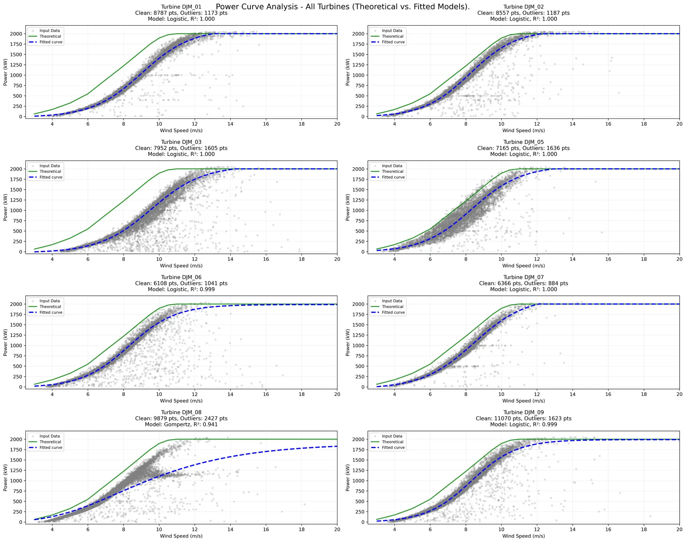
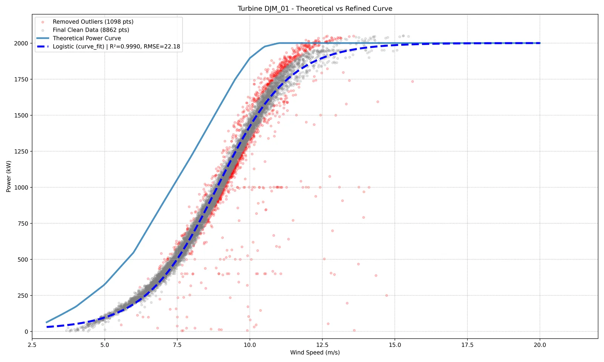
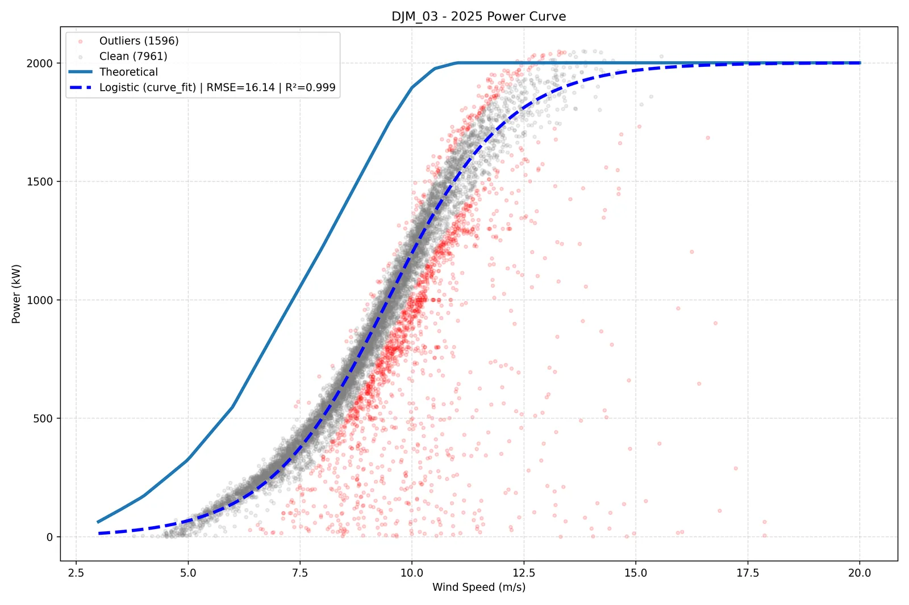
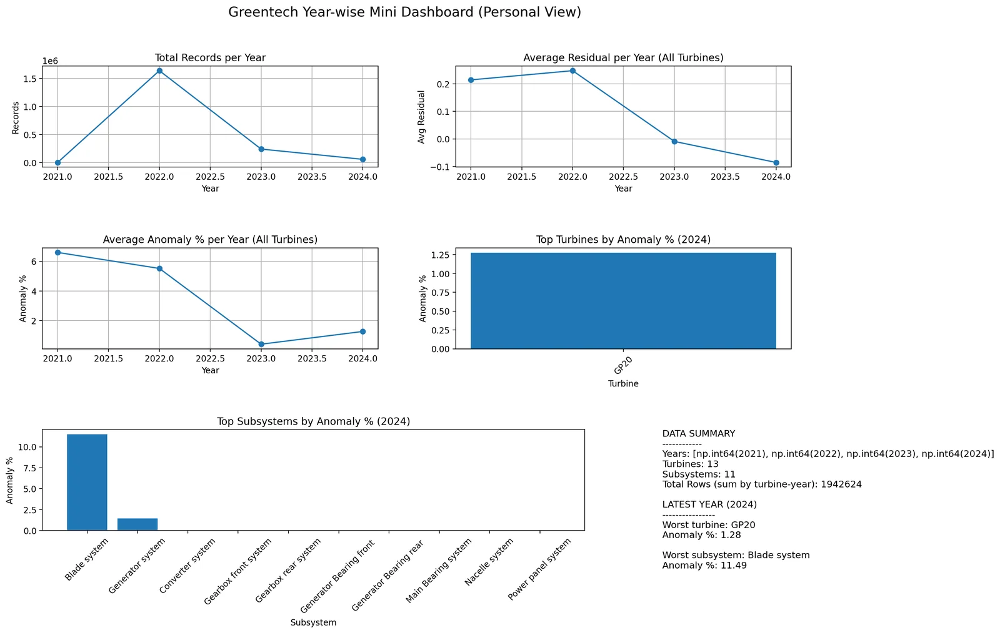

2018 – 2022
Foundation
BEng, Electronics & Communication
Anna University · Chennai
Open to roles · Joins in ≤ 15 days · Coimbatore
Data Engineer · 3.5+ years · wind energy, telecom, retail.

Different industries, one job: take data nobody can read and make it something a team can act on.
Anna University · Chennai
Quadgen Wireless · Bangalore
SQL + PySpark ETL and Power BI for network KPIs.
Trend Clothing · Birmingham, UK
Customer & sales insights, automated Power BI reporting.
Pixxon AI (Greentech) · Coimbatore
SCADA pipelines for 15+ turbines · LightGBM · FastAPI · MLflow.
See the wind work ↓68M raw CAN frames from a real heavy-duty truck → a traceable lakehouse, API, dashboard and guarded AI analyst. Built end to end by me.
Binary payloads, gaps, stale signals. I built the layers that make it readable.
Dashboard value → Gold → Silver → raw bytes → source file and line.
Click a system and see its decoded J1939 signals.
Found in the data, not guessed: 880 events and 19.6 L of fuel.
Every number the AI states is validated against the evidence.


My power-curve service cleans noisy SCADA data and fits a physically valid curve for each turbine, in about 3 s.
curve_fit, with a Differential Evolution fallback
Capped at 2,000 kW rated power, never above theoretical
Parallel pipeline, 6 workers
LightGBM · FastAPI · MLflow · RabbitMQ





Coronary heart disease risk modelled across four countries with XGBoost and Random Forest.
Bars show rank order only.
Quadgen Wireless
Trend Clothing
Power BI Data Analyst

Available in 15 days or less · English, Tamil, Malayalam